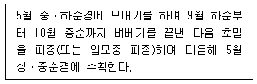

축산산업기사 (2002-05-26 기출문제)
1과목: 가축번식 육종학
1. 인위적 배란에 가장 중요한 호르몬은?
- 프로게스트론(Progesterone)
- 황체형성 호르몬(LH)
- 난포자극 호르몬(FSH)
- 갑상선 호르몬
(정답률: 73%)

2. 소의 유산과 관계 있는 전염병은?
- 비브리오
- 브루셀라병
- 트리코모나스
- 렙토스피라
(정답률: 92%)
3. 춘기발동기(puberty)에 가축을 번식에 공용할 경우 나타나는 현상은?
- 수태율이 높아진다.
- 난산이 감소한다.
- 생시체중이 작아진다.
- 번식 수명이 길어진다.
(정답률: 64%)
4. 호르몬의 작용상 특징이라고 볼 수 없는 것은?
- 어떤 반응에 대해서도 에너지를 공급하지 않는다.
- 극히 적은 량으로도 그 기능을 발휘한다.
- 혈류(血流)로부터 장시간 동안 소실되지 않는다.
- 반응의 속도를 조절하고 새로운 반응을 일으키지 않는다.
(정답률: 84%)
5. 젖소의 외모심사에 중요시 되지 않는 것은?
- 유방의 크기
- 사지(四肢)의 건전도
- 체적(體積)
- 피부의 백색반점의 크기
(정답률: 86%)
6. 육용계의 자질개량을 위한 선발요건으로 고려할 사항이 아닌 것은?
- 볏의 모양
- 성장율
- 우모의 발생속도
- 우모의 색
(정답률: 76%)
7. 말과 돼지에서 볼 수 있는 태반의 형태는?
- 산재성 태반(散在性 胎盤)
- 궁부성 태반(宮阜性 胎盤)
- 대상 태반(帶狀 胎盤)
- 반상 태반(盤狀 胎盤)
(정답률: 87%)
8. 돼지의 수정적기는 발정개시 후 몇 시간인가?
- 5∼10시간
- 10∼25.5시간
- 26∼35시간
- 35∼48시간
(정답률: 82%)
9. 다음 중 근친교배가 될 수 없는 것은?
- 전형매간 교배
- 반형매간 교배
- 사촌간 교배
- 품종간 교배
(정답률: 87%)
10. 젖소의 분만시 저 칼슘증으로 허탈이 일어나는 질병은?
- 케토시스증
- 임신중독
- 질탈
- 유열
(정답률: 84%)
11. 돼지의 발정징후로 보기 어려운 것은?
- 외음부가 종창되고 충혈된다.
- 등을 눌러주면 부동반응을 나타낸다.
- 점액이 분비되지 않는다.
- 사료에 무관심하며 계속 운다.
(정답률: 81%)
12. 돼지의 임신 진단시 임신 30일령 이후의 임신을 비교적 정확하게 진단하는 방법은?
- 방사선 진단법
- 초음파 진단법
- NR법
- 호르몬 주사법
(정답률: 88%)
13. 육우에 이용되는 교배법이 아닌 것은?
- 품종간 교배
- 퇴교배
- 근친교배
- 품종간 윤환교배
(정답률: 72%)
14. 난형은 난형지수가 얼마일 때 가장 바람직한가?
- 82∼86
- 78∼82
- 72∼76
- 66∼70
(정답률: 75%)
15. 종돈 검정소에서 검정개시 체중이 30kg, 30kg 도달일령이 75일인 종돈을 검정한 결과 90kg 도달일령이 135일이었다면 검정기간 동안의 일당 증체량은?
- 1000g
- 850g
- 800g
- 750g
(정답률: 64%)
16. 양적 형질의 표현형을 기초로 한 유우의 유전능력 평가에서 유전적인 요인은?
- 목장의 효과
- 계절의 효과
- 부모의 효과
- 산차의 효과
(정답률: 80%)
17. 선발 강도에 대한 설명 중 옳은 것은?
- 선발 비율이 클수록 선발 강도는 커진다.
- 동일한 선발 비율이라면 모집단의 크기가 클수록 선발 강도는 커진다.
- 측정 단위가 다른 형질간에는 선발 강도를 직접 비교할 수 없다.
- 동일한 선발 비율이라면 선발 형질의 변이가 작을수록 선발 강도는 커진다.
(정답률: 62%)
18. 유전력을 높이는 방법이 아닌 것은?
- 외부로부터의 새로운 종축 도입
- 가급적 어린 가축을 번식에 이용
- 동일한 조건 하에서의 사양 관리
- 환경 변이를 줄이기 위한 통계적 보정
(정답률: 68%)
19. 잡종강세 현상에 대한 설명으로 옳지 않은 것은?
- 잡종 자손의 능력이 양친 중 우수한 쪽보다 못할 수도 있다.
- 유전력이 높은 형질에서 잡종강세가 크게 나타난다.
- 가축에 있어 닭과 돼지에서 산업적으로 널리 이용되고 있다.
- 잡종강세는 생존율, 강건성, 번식 형질 등에서 크게 나타난다.
(정답률: 58%)
20. 소의 발정에 대한 설명 중 옳지 않은 것은?
- 오후에 발정을 개시한 소가 오전에 개시한 소보다 발정지속 시간이 긴 경향이 있다.
- 평균 발정주기는 28일이다.
- 발정개시 시각은 한밤중부터 이른 아침까지가 많고 오후부터 개시하는 것은 적다.
- 소의 나이가 많아지면 발정지속 시간이 증가되는 경향이 있다.
(정답률: 74%)
2과목: 가축사양학
21. 유지 단백질 요구량을 결정하는 요인과 거리가 먼 것은?
- 내생뇨질소법
- 질소균형법
- 사양시험법
- 기초대사율
(정답률: 62%)
22. 에너지가 가장 높은 사료는?
- 대두박
- 호맥
- 옥수수
- 밀기울
(정답률: 80%)
23. 칼슘(Ca) 대사와 밀접한 관계를 가지고 있는 비타민은?
- 비타민 A
- 비타민 B
- 비타민 C
- 비타민 D
(정답률: 77%)
24. 비육이 잘된 도체(屠體)에는 다음 조성분 중 어느 성분이 가장 많이 함유되어 있는가?
- 단백질
- 지방
- 탄수화물
- 무기물
(정답률: 77%)
25. 닭(가금)에서 가장 많이 사용하는 에너지 표현방법은?
- 총에너지(GE)
- 가소화에너지(DE)
- 대사에너지(ME)
- 정미에너지(NE)
(정답률: 71%)
26. 송아지의 발육은 유전적 요인, 환경적 요인 및 영양수준에 따라서 크게 영향을 받으나, 실제로 암송아지의 육성 계획을 세우는데는 ( )을(를) 언제로 잡을 것인가가 중요하다. ( )안에 들어갈 용어는?
- 비유피크기
- 건유기
- 초산월령
- 사료증급기
(정답률: 75%)
27. 가축에 급여하는 사료 1kg에 TDN, DE, ME 및 NE가 각각 72%, 2500kcal, 1800kcal 및 1200kcal의 에너지와 단백질이 10% 함유되어 있다면 이 때 에너지:단백질의 비율EP/R)은?
- 720
- 250
- 180
- 120
(정답률: 50%)
28. 유지율 3.0%의 우유를 20㎏ 생산하는 젖소의 능력을 FCM으로 환산하면 얼마인가?
- 13㎏
- 15㎏
- 17㎏
- 19㎏
(정답률: 65%)
29. 단백질의 주요 기능은?
- 체온유지
- 세포의 구성성분
- 해독작용
- 주된 에너지원
(정답률: 76%)
30. 증체 에너지를 표시하는 것은?
- 총에너지
- 소화에너지
- 대사에너지
- 정미에너지
(정답률: 54%)
31. 부화 후의 어린 병아리에서 첫 1주동안의 적정사육 온도(온도계상의 온도)는 몇 도인가?
- 25℃ 내외
- 28∼30℃
- 31∼33℃
- 35℃ 이상
(정답률: 72%)
32. 다음 단미사료 중 산란계 사료로 이용하기 어려운 것은?
- 채종박
- 어분
- 우지
- 육분
(정답률: 62%)
33. 반추가축에서 조사료보다 농후사료를 더 많이 섭취하면 반추위내에 생성되는 휘발성 지방산 중 생성비율이 가장 많이 증가되는 것은?
- 초산
- 프로피온산
- 낙산
- 글루탐산
(정답률: 68%)
34. 착유우에 필요한 필수아미노산 중 황을 함유하고 있으면서 제1 또는 제2제한 아미노산으로 알려져 있는 아미노산은?
- Lysine
- Cysteine
- Methionine
- Leucine
(정답률: 61%)
35. 착유우에서 에너지 섭취량이 요구량 이상으로 너무 과다하면 나타날 수 있는 설명 중 틀린 내용은?
- 젖소가 비만하게 된다.
- 체유지를 위한 에너지 요구량이 증가하게 된다.
- 성장에 이용되는 에너지는 오히려 많아진다.
- 유방 또는 유선조직의 발달이 불량하게 된다.
(정답률: 70%)
36. 비육시 사료지방의 옥소가가 낮은 것을 급여하면 체지방은 어떤 지방이 생산되는가?
- 경성지방
- 연성지방
- 불포화지방
- 황색지방
(정답률: 56%)
37. 착유우에 테타니가 자주 발생하는 이유는?
- 칼륨(K)이 부족하기 때문
- 망간(Mn)이 부족하기 때문
- 칼슘(Ca)이 부족하기 때문
- 마그네슘(Mg)이 부족하기 때문
(정답률: 71%)
38. 임신한 가축의 가장 적절한 사양은?
- 전 임신기간을 통해 높은 수준의 사료를 준다.
- 임신 중기에 높은 수준의 사료를 준다.
- 임신 초기에 높은 수준의 사료를 준다.
- 임신 후반기에 높은 수준의 사료를 준다.
(정답률: 77%)
39. 강피류 사료를 잘못 설명한 것은?
- 곡류에 비해 조섬유나 무기물 함량이 많다.
- 곡류에 비해 에너지가 낮다.
- 곡류에 비해 조단백질 함량이 떨어진다.
- 곡류에 비해 비타민은 오히려 많다.
(정답률: 54%)
40. 옥수수 단백질은 어느 것인가?
- 제인(zein)
- 글리아딘(gliadin)
- 오리제닌(oryzenin)
- 레구민(legumin)
(정답률: 68%)
3과목: 축산경영학
41. 고정비에 속하지 않는 것은?
- 일용노임
- 자기자본이자
- 자가노력비
- 자기소유토지에 대한 지대
(정답률: 68%)
42. 자산평가액을 내용년수의 합계로 나눈 후 그 연수의 역을 곱하여 각 연도의 상각액을 계산하는 감가 방법은?
- 정액법
- 급수법
- 잔액법
- 비례법
(정답률: 60%)
43. 기업적 축산경영의 목표는?
- 소득의 극대화
- 가족노동보수의 증대
- 이윤의 극대화
- 조수입의 극대화
(정답률: 81%)
44. 초지에 대한 감가상각을 하지 않게 하는 원인이 되는 것은?
- 배양력
- 불가증성
- 불가동성
- 불소모성
(정답률: 69%)
45. 당초가격이 1,200,000원, 폐우가격이 600,000원, 내용년수가 5년이다. 이 때 젖소의 정액법에 의한 감가상각비는?
- 120,000원
- 150,000원
- 180,000원
- 210,000원
(정답률: 76%)
46. 감가상각비의 계산 방법 중 정액법에 의한 계산 방법은?
- 구입가격(기초가격)-수리비/내용 년수
- 구입가격(기초가격)-잔존가격/내용 년수
- 구입가격(기초가격)+세금/내용 년수
- 구입가격(기초가격)+수수료/내용 년수
(정답률: 82%)
47. 낙농농가의 경영개선에 의한 생산비 절감 방안이 아닌 것은?
- 산유량 증대
- 분뇨처리 시설개선
- 번식률 향상
- 합리적인 사료급여
(정답률: 74%)
48. 다른 생산물의 생산량을 증감시키지 않고 한가지 생산물의 생산량을 증가시킬 수 있다면 이 두 생산물은?
- 경합생산물
- 보합생산물
- 보완생산물
- 결합생산물
(정답률: 55%)
49. 고정자본재에 따르는 비용이 아닌 것은?
- 사료비
- 감가상각비
- 유지비
- 이자
(정답률: 69%)
50. 생산함수 제 2영역에 대한 설명 중 옳은 것은?
- 생산요소 투입시부터 평균생산이 최고인 점까지의 범위
- 총생산이 최고인 수준이상까지의 범위
- 평균생산 및 한계생산이 증가하는 범위
- 총생산은 증가하지만 한계생산과 평균생산은 감소하는 범위
(정답률: 61%)
51. 축산경영 운영의 합리화 방안이 아닌 것은?
- 시설, 기계의 근대화
- 기술개선
- 경영조직의 적정화
- 경영규모의 소규모화
(정답률: 74%)
52. 상업농시대의 축산경영의 목표로 적합한 것은?
- 자급자족을 위한 수단
- 생활유지를 위한 수단
- 의식주의 원료획득
- 보다 많은 화폐소득의 획득
(정답률: 77%)
53. 축산경영에서 이윤 극대화의 조건은?
- 한계수익 = 한계비용
- 한계수익 < 한계비용
- 한계수익 > 한계비용
- 한계비용 ≠ 한계수익
(정답률: 75%)
54. 평균 생산비와 한계 생산비의 관계가 잘못된 것은?
- 두 곡선은 한계 생산비 최하점에서 교차한다.
- 두 곡선은 평균 생산비 최하점에서 교차한다.
- 교차점 이전에서는 평균 생산비가 한계 생산비 보다 크다.
- 교차점 이후에서는 한계 생산비가 평균 생산비 보다 크다.
(정답률: 40%)
55. 축산경영의 경제적 특징과 가장 거리가 먼 것은?
- 토지의 이용 증진
- 생산물의 저장 증진
- 노동력의 이용 증진
- 자금회전의 원활화
(정답률: 67%)
56. 농업 소득율을 바르게 표현한 것은?
- (농업경영비/농업소득)× 100
- (농업소득/농업조수입)× 100
- (농업소득/자기자본액)× 100
- (자기자본액/농업소득)× 100
(정답률: 63%)
57. 다음 중 유동자본재는 어느 것인가?
- 종돈
- 젖소
- 산란계
- 육우
(정답률: 64%)
58. 낙농경영의 진단지표가 아닌 것은?
- 두당 생산량
- 농후사료와 조사료의 비율
- 관리원인
- 질병발생률
(정답률: 60%)
59. 축산경영의 생산성 지표가 아닌 것은?
- 노동생산성
- 자본생산성
- 소득률
- 사료요구율
(정답률: 54%)
60. 축산경영의 일반적 특징의 하나인 결합생산물의 예로 가장 적합한 것은?
- 산란계와 육계
- 돼지고기와 우유
- 쇠고기와 쇠가죽
- 한우고기와 수입쇠고기
(정답률: 75%)
4과목: 사료작물학
61. 호밀을 다음과 같은 조건에서 답리작 사료작물로 재배할 경우 호밀의 품종으로 가장 알맞는 것은?

- 조생종
- 중생종
- 만생종
- 극만생종
(정답률: 70%)
62. 윤작의 유리한 점에 해당되지 않는 것은?
- 토양중의 양분을 최대한 이용할 수 있다.
- 파종시기를 임의로 결정할 수 있다.
- 병충해의 발생을 줄일 수 있다.
- 수량의 감소를 막을 수 있다.
(정답률: 68%)
63. 콩과(두과)목초의 일반적인 특성과 거리가 먼 것은?
- 뿌리는 곧은 뿌리로 되어 있다.
- 종자는 등과 배쪽에 봉합선을 따라서 벌어지는 꼬투리 안에 있다.
- 줄기는 대체로 속이 비어 있고, 둥글며 뚜렷한 마디가 있다.
- 목초의 뿌리에는 질소고정을 할 수 있는 뿌리혹 박테리아를 갖는다.
(정답률: 77%)
64. 사일리지용 옥수수의 건물수량 구성 중 암이삭이 차지하는 비율은?
- 50%
- 30%
- 20%
- 10%
(정답률: 64%)
65. 멸강충 방제에 가장 적합한 초지관리방법은?
- 비가 올 때까지 기다린다.
- 질소비료를 충분히 준다.
- 발생전에 살충제를 살포한다.
- 발생초기에 살충제를 살포한다.
(정답률: 65%)
66. 초지의 방목이용 중 특히 유우에게 가장 좋은 방목방법은?
- 연속방목
- 대상방목
- 윤방목
- 계목
(정답률: 70%)
67. 우리나라의 초지에 많이 발생하는 지상부의 주요 해충은?
- 멸강나방(유충)
- 땅강아지
- 굼벵이
- 방아벌레
(정답률: 78%)
68. 내습성이 강한 1년생 화본과 사료작물은?
- 스위트클로버
- 이탈리안 라이그라스
- 수단그라스
- 브롬그라스
(정답률: 60%)
69. 오차드그라스에 대한 설명 중 틀린 것은?
- 가을 파종만 된다.
- 채종으로 이용하는 것 이외에는 혼파하는 것이 좋다.
- 가장 적합한 이용은 방목과 채초라 할 수 있다.
- 생육에 가장 알맞는 기온은 21℃ 정도이다.
(정답률: 77%)
70. 다음 목초 중 뿌리가 가장 깊게 뻗는 초종은?
- 티모시
- 오차드 그라스
- 알팔파
- 라디노 클로버
(정답률: 69%)
71. 두과목초의 수확적기는?
- 영양생장기
- 분얼기
- 출수기
- 개화기
(정답률: 62%)
72. 다음 목초 중 지하경이 있는 것은?
- 이탈리안 라이그라스
- 리드 카나리그라스
- 화이트 클로버
- 알팔파
(정답률: 58%)
73. 단위면적당 가소화 영양소 총량이 높아 사일리지 작물로 가장 알맞은 것은?
- 수수
- 연맥
- 수단그라스
- 옥수수
(정답률: 63%)
74. 발아 후 초기생육이 가장 빠른 사료작물은?
- 레드톱
- 오차드그라스
- 켄터키블루그라스
- 이탈리안라이그라스
(정답률: 48%)
75. 건초 조제시 화본과 목초의 예취적기는?
- 수잉기부터 출수초기
- 신장초기
- 생장기
- 개화결실기
(정답률: 79%)
76. 분얼이 왕성하며 초장이 2∼3m에 달하고 가뭄에 잘 견디며, 품종에는 파이오니어, 수히-1 등이 있으며, 청예로 많이 이용하는 작물은?
- 옥수수
- 수단그라스
- 호밀
- 피
(정답률: 66%)
77. 목초의 춘파(春播)와 추파(秋播)의 특징이 잘못 설명된 것은?
- 춘파는 잡초의 피해를 받기 쉽다.
- 추파는 병충해의 피해가 적다.
- 추파는 다음 해의 수량이 많다.
- 춘파는 목초의 월동율을 낮춘다.
(정답률: 60%)
78. 북방형(한지형)목초가 가장 잘 자라는 기온은?
- 5∼10℃
- 10∼15℃
- 15∼21℃
- 25∼30℃
(정답률: 69%)
79. 우리나라에서는 벌노랑이가 여기에 속하며, 내서성과 내한성이 강하며, 적응성이 넓어 간척지에서도 생육이 가능한 목초는?
- 라디노 클로버
- 오차드그라스
- 리드 카나리그라스
- 버어드즈풋 트레포일
(정답률: 61%)
80. 사일리지의 품질감정 중 화학적 방법에 의한 품질 감정을 설명한 것이다. 잘못된 것은?
- 건물함량에 관계없이 pH치(산도)가 같으면 비슷한 발효 양상을 보이므로 질이 비슷하다.
- 사일리지의 유기산 비율은 젖산함량이 높고 낙산의 함량이 없거나 적을수록 양질의 사일리지이다.
- 전 질소함량 중 암모니아태 질소의 비율은 낮을수록 우수한 사일리지이다.
- 총산에 대한 초산의 비율을 사일리지의 질에 크게 문제가 되지 않는다.
(정답률: 56%)